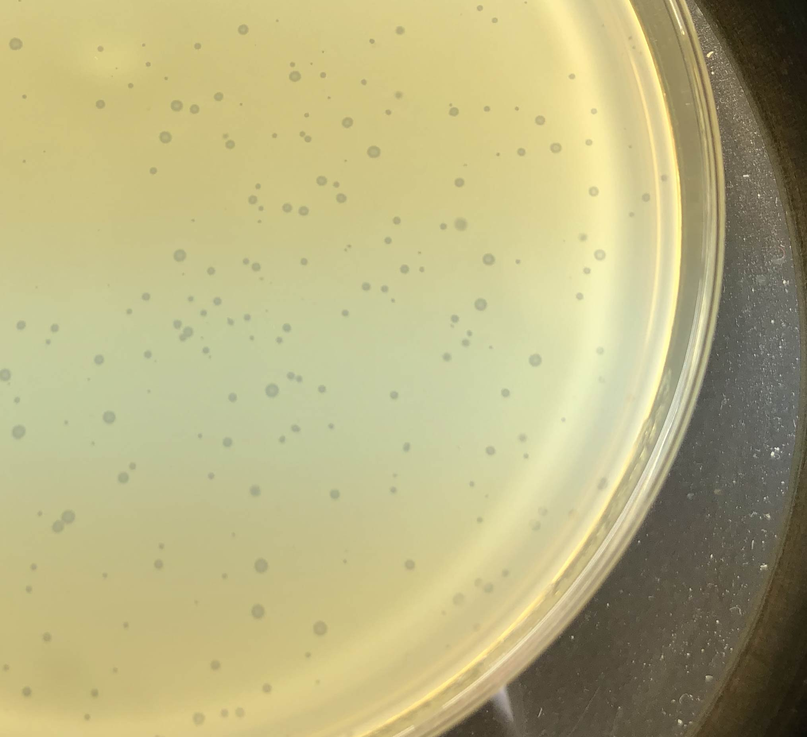
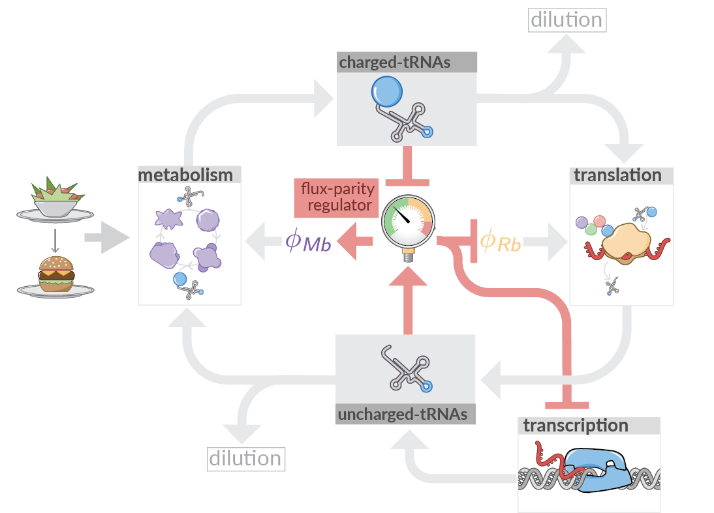
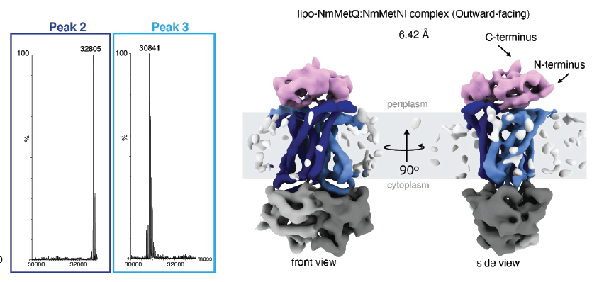

Image gallery
Here you find a selection of images illustrating experiments and topics we cover. With your help, we hope to add more images from the 2025 class.
Phage counting

Plaques show the expansion of phage populations. Plaque counting is the method of choice for measuring phage concentration. Image taken during class.
Resource allocation

Cells need to efficiently allocate their limited ressources, including the activity of ribosomes, to efficiently grow. Mathematical models elucidates the consequences and implementation of fundamental allocation strategies. Image courtesey of Griffin Chure, Chure et al eLife 12:e84878 (2023)
Lipoprotein complex

Characterization of the Lipo-MetQ:MetNI ABC transporter complex. Analysis of the MetQ cysteine-to-alanine mutant using intact mass spectrometry (left) and cryoEM structure of the lipo-MetQ:MetNI complex (right). Image courtesey of Naima Sharaf, Sharaf et al. eLife 10:e69742 (2021).
[ ]: